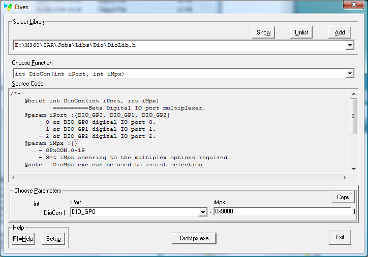

When Elves starts it opens with its main window as shown:

When Elves first opens it also opens Notepad with a text file giving
brief instructions. This is mainly to set up the normal help system. See
Setup to switch help modes.
The control elements of the Elves window are described below.
This button opens the setup window which is described in the
Setup section.
F1 = Help
This opens help according to the help mode selected in
Setup. For general guidelines on how to use help go to
the General Overview page.
Select Library
This set of controls enables the user to select which library source files to
work with. This is done using the Add button to select the appropriate
header files. Such selected files are listed in the list box. To
remove an entry in the list, first select it and then press the Unlist
button. To change the selection, simply drop down the list and select the
required header file. When the choice is changed the relevant details are
changed on the rest of the screen to suit.
The contents of the list box can be copied and pasted to the user source file
for the #include list. e.g.
#include "C:\M360\IAR\Jobs\Libs\Dio\DioLib.h".
To work with Elves the libraries have to follow certain rules as described in
Elves Code Rules.
Initially the Source Code window will show the main contents of the chosen
header file. Subsequently clicking the Show button will reload the header
file contents to the Source Code window.
Choose Function
This list automatically lists the functions contained in the chosen library.
Drop down the list and select the required function. When a function is chosen
its source code is automatically copied from the library source file to the
Source Code edit box.
Source Code
This edit box is a direct copy from the function's source code. This consists
of the header which gives exact instruction how to use the function and
what it does. Also shown is the actual source code which the user can
view and thus determine exactly what the function does.
Choose Parameters.
For use in C programs the user can choose the parameters of the functions
using the Edit Boxes, Combo Boxes and List boxes as applicable. The resulting
complete function can then be placed into the users code as described below.
When deciding what to select for the parameters the user can make use of the
information in the Source Code window. Clicking on the parameter name
will scroll the parameter details into view in the Source Code window.
Copy
This button places the function name plus the selected parameters onto the
clipboard. For the example shown the clipboard contents would be
DioCon(DIO_GP0,0x9000)
At this stage the user can paste this code into his own source editor.
Helpers
Helpers are additional applications that can be accessed through the Elves
application. Helper applications must reside in the same folder as the
function source code (in the example DioMpx.exe is in
C:\M360\IAR\Jobs\Libs\Dio\).
Exit
This button closes the application.
 Context
Context